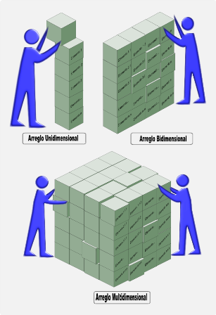
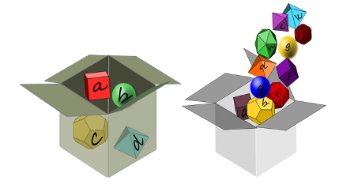
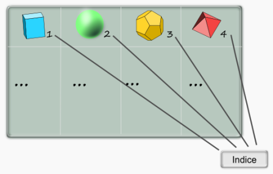
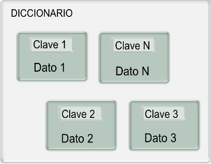
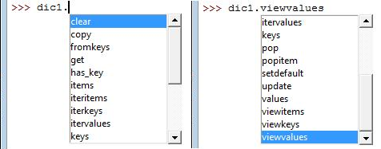
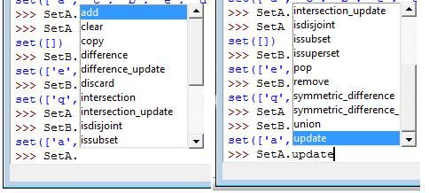

Capítulo VI - Arreglos, vectores y/o matrices

En el desarrollo de aplicaciones de computador se requiere de diferentes formas para el manejo de datos e información. También es importante como se escribe de manera sencilla el código para procesar y acceder a los datos.
Los arreglos son variables especiales de las que disponen prácticamente todos los lenguajes de programación de diferentes formas para facilitar los procesos de almacenamiento y acceso de grupos de datos.
Se presentará el concepto de arreglos en computadores y se describirá en más detalle sus diferentes formas en el lenguaje Python.
Objetivos de aprendizaje
- Entender el concepto de arreglo en el ordenador.
- Conocer los diferentes tipos de arreglos en Python.
- Utilizar y generar los diferentes arreglos en Python.
- Usar arreglos en la programación de funciones en Python.
Subtemas del capítulo
Concepto general de arreglo
Los arreglos en general son variables de asignación de datos en los lenguajes de programación que permiten adicionalmente guardar un grupo o conjunto de datos. Podemos imaginarlos como cajas donde podemos guardar un grupo de cosas, pero con la capacidad adicional de marcar cada una de las cosas dentro de la caja como muestra la Imagen (GALEANO, 2011y) (Van Tassel, 2004; Wikipedia, 2011m; Lecky, 2007).

En todos los lenguajes de programación se tiene una o varias maneras de denominar o definir cuándo una variable es de tipo arreglo y cómo se marcarán cada una de las cosas dentro de esa variable (Exforsys, 2011; MSDN, 2010). El nombre de asignación dentro de la variable a cada cajón se denomina el índice, como se esquematiza en la Imagen (GALEANO, 2011z).

Se debe definir claramente en un programa o aplicación de computador cuando el tipo de variable que se requiere es un arreglo y cómo es la marcación interior o índice. Estos conceptos los abordaremos para el caso particular del lenguaje Python en las secciones siguientes.
 )
)Variables tipo LISTA en Python
En Python las listas son uno de los tipos de básicos de variables u objetos. Para generar una lista basta hacer una asignación a un nombre de variable con los elementos dentro de corchetes cuadrados [ ]. Veamos un ejemplo en el intérprete de Python (Python shell) :
>>> L1 = [1, 2, 3, 4]
>>> type(L1)
<type 'list'>
>>> print L1
[1, 2, 3, 4]
>>>
Se asigna al nombre L1 una lista con los datos 1, 2, 3, y 4. En Python este tipo de variable se denomina list y se puede llamar como una variable simplemente.
Variables tipo TUPLA en Python
La TUPLA es otro tipo de arreglo que dispone el Python. Esta variable está más cerca al concepto matemático de vector, puesto que en Python la tupla se maneja como una lista más cerrada porque no puede cambiar elementos individuales, en otras palabras, es inmutable según lo definen los manuales (Docs Python, 2011a). Veamos cómo se genera una tupla y esta característica en un ejemplo:
>>> t1 = 1, 3, 5
>>> t1
(1, 3, 5)
>>> t2 = ('salud', 'dinero', 'amor', 1, 2, 3)
>>> t2
('salud', 'dinero', 'amor', 1, 2, 3)
>>> t1[0]
1
>>> t1[0]= 5
Traceback (most recent call last):
File "<pyshell#12>", line 1
t1[0]= 5
TypeError: 'tuple' object does not support item assignment
>>>
Se generan las tuplas t1 y t2, la primera solo separando elementos con comas y la segunda usando paréntesis para encerrar los elementos de la tupla. Los índices se usan igual a las listas, pero al intentar asignar la posición 0 de t1 aparece un error de asignación no soportada ('tuple' object does not support item assignment), es el concepto de inmutabilidad.
Variable tipo DICCIONARIO en Python

Un arreglo tipo diccionario (en inglés dictionary) lo podemos definir como una variable indexada libremente, ya que los índices no son números con un orden predefinido. En la Imagen (GALEANO, 2011aa) se esquematiza un diccionario como un conjunto de datos en cajones, con una clave especial cada cajón. Este tipo de arreglos también se conoce como memorias asociativas en otros lenguajes. En Python la restricción en las palabras claves de los diccionarios es que deben ser objetos inmutables, tales como números, caracteres o tuplas, y no se deben repetir en un mismo diccionario.
Para crear un diccionario se puede proceder como sigue:
>>> dic1 = {'carro1': 4745, 'carro2': 4139, 'carrop': 7892}
>>>dic1
{'carro2': 4139, 'carro1': 4745, 'carrop': 7892}
>>>dic2 = dict([(1, 'carro1'), (2, 'carro2')])
>>>dic2
{1: 'carro1', 2: 'carro2'}
>>>
Se muestran dos formas de generar un diccionario, la primera escribe entre corchetes redondos { } las palabras claves y su dato respectivo separado por los dos puntos : . En el diccionario dic1 las claves son alfabéticas, mientras que en el diccionario dic2 las claves son numéricas.

La Imagen anterior muestra los diferentes métodos que tienen los objetos tipo diccionario en Python para acceder a su información o realizar algún procedimiento específico. Por ejemplo, los métodos .viewvalues y .keys nos sirven para listar sus datos y palabras claves respectivas:
>>> dic1
{'carro2': 4139, 'carro1': 4745, 'carrop': 7892}
>>>dic2
{1: 'carro1', 2: 'carro2'}
>>> dic1.viewvalues()
dict_values([4139, 4745, 7892])
>>>dic1.keys()
['carro2', 'carro1', 'carrop']
>>>dic2.keys()
[1, 2]
>>>
Para acceder a cualquier dato de un diccionario se debe especificar su palabra índice o palabra clave, de forma similar a los arreglos tipo lista o tupla, por ejemplo:
>>>dic1['carro2']
4139
>>>dic2[2]
'carro2'
>>>
Al utilizar estos arreglos se debe poner especial atención cuando se requiere realizar iteraciones con estas variables, ya que su principal información de iteración son las palabras claves. El siguiente ejemplo muestra como al usar el nombre de la variable dic1 en un ciclo for, la iteración se hace con sus palabras claves; si se quiere acceder directamente a la palabra clave y su dato respectivo, debemos usar en el ciclo el método .iteritems() :
>>>for q in dic1:
print q
carro2
carro1
carrop
>>>for p, q in dic1.iteritems():
print p, q
carro2 4139
carro1 4745
carrop 7892
>>>
Aquí el primer ciclo muestra sólo las palabras claves y el segundo, las claves y su dato respectivo.
Los diccionarios en Python disponen de una gran cantidad de funciones y aplicaciones que se irán trabajando más adelante.
Variable tipo CONJUNTO en Python
En Python existe un tipo de arreglo denominado CONJUNTO (en inglés set). Este tipo de arreglo soporta operaciones matemáticas de la teoría de conjuntos y no permite duplicación de elementos. Para crear un arreglo tipo conjunto se escribe como sigue:
>>>digitos = [1,2,3,2,3,4,5,6,5,7,8,9,0,7,8,6,5,4,3,4,5,6,0]
>>>SetA = set(digitos)
>>>enteros = [12, 3, 4, 5,-3, -6, 19, 13, -5,7,8,17,-3]
>>>SetB = set(enteros)
>>>SetA
set([0, 1, 2, 3, 4, 5, 6, 7, 8, 9])
>>>SetB
set([3, 4, 5, 7, 8, 12, 13, 17, 19, -6, -5, -3])
>>>
Los arreglos tipo conjunto soportan operaciones de la teoría de conjuntos, tales como unión, intersección, diferencia y pertenecía entre otros. Veamos cómo se usan estos operadores para conjuntos:
>>>LA = ['a', 'b', 'c', 'd', 'e', 'd', 'c', 'a', 'b', 'd', 'e', 'c']
>>>SetA = set(LA)
>>>print SetA
set(['a', 'c', 'b', 'e', 'd'])
>>>LB = ['d','e','f','g','h','i','h','g','f','e','d','f','d','e','g','h']
>>>SetB = set(LB)
>>>print SetB
set(['e', 'd', 'g', 'f', 'i', 'h'])
>>>SetA - SetB # diferencia de conjuntos
set(['a', 'c', 'b'])
>>>SetA | SetB # union de conjuntos
set(['a', 'c', 'b', 'e', 'd', 'g', 'f', 'i', 'h'])
>>>SetA & SetB # interseccion de cojuntos
set(['e', 'd'])
>>>SetA ^ SetB # pertenecia exclusiva
set(['a', 'c', 'b', 'g', 'f', 'i', 'h'])
>>>
>>>'a' in SetA
>>>True
>>>'o' in SetA
False
>>>
Los arreglos tipo conjunto disponen también de sus propios métodos y algunos de ellos son una alternativa de escritura para las operaciones de conjuntos. La siguiente imagen muestra todos los métodos que se tienen para los conjuntos y su utilización es similar a los arreglos anteriores.

Funciones con argumentos de arreglos
Cuando se programan funciónes en Python donde sus argumentos de entrada son arreglos, es posible usar los nombres de variables teniendo en cuenta su uso dentro de la función o especificar su variable con un asterisco (*nombre) delante de la variable, si es una lista o una tupla, o con dos asteriscos delante (**nombre) si se trata de aceptar los argumentos como un diccionario. Para el caso en que se requiera usar de los dos tipos, se debe tener en la secuencia de los argumentos primero las listas y luego los diccionarios. Veamos el siguiente ejemplo de una función con argumentos de arreglos, primero asumiendo nombres de variables directamente en los argumentos y luego con manejo especial:
>>>def arreglo1(p,e,A):
for k,q in A.iteritems():
print k, 'pesa ', p[q],' Kilos, y tiene ' ,e[q], 'años.'
>>>peso = [10.1, 23.5, 345.3]
>>> edad = [8, 7, 10]
>>>animales = {'gato': 0, 'perro': 1, 'vaca':2}
>>>arreglo1(peso, edad, animales)
gato pesa 10.1 Kilos, y tiene 8 años.
vaca pesa 345.3 Kilos, y tiene 10 años.
perro pesa 23.5 Kilos, y tiene 7 años.
>>>Aquí se programó la función arreglo1() con los argumentos de entrada p, e y A que se manejan internamente según el tipo de variable. Observe que p y e deben ser listas o tuplas, mientras que A debe ser un diccionario para soportar el método .iteritems.
>>>def arreglo2(p,*e,**A):
for k,q in A.iteritems():
print k, 'pesa ', p[q],' Kilos, y tiene ' ,e[q], 'años.'
>>>arreglo2(peso, 8,7,10, gato=0, perro=1, vaca=2)
gato pesa 10.1 Kilos, y tiene 8 años.
vaca pesa 345.3 Kilos, y tiene 10 años.
perro pesa 23.5 Kilos, y tiene 7 años.
>>>
Aquí al usar los * y ** en las variables e y A, se asume un comportamiento especial para hacer el llamado de la función. La variable peso se asume como un argumento, luego los valores 7, 8 y 10 se leen como el argumento e, y al final el nombre de la información se asume como palabra clave con su respectivo dato en una variable A tipo diccionario.
Nota: A continuación se encuentran las referencias bibliográficas utilizadas para la construcción de los contenidos de este capítulo: